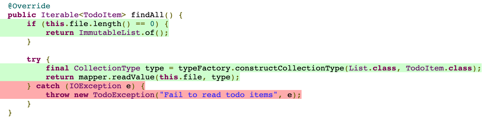
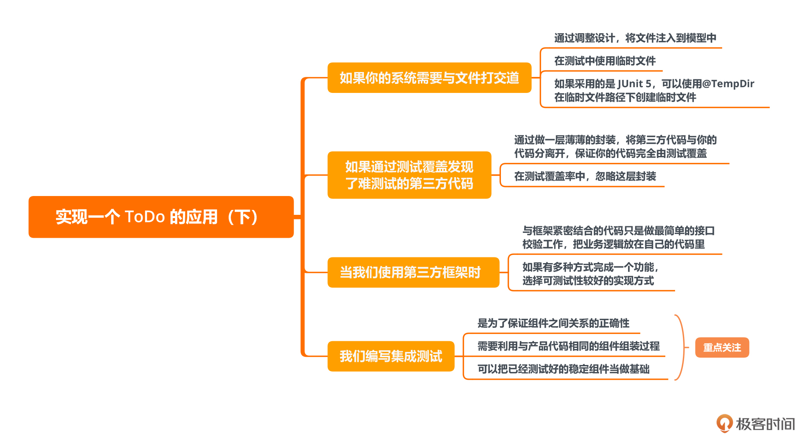

- 00 开篇词 为什么写测试是程序员的本职工作？.md.html
- 01 实战：实现一个 ToDo 的应用（上）.md.html
- 02 实战：实现一个 ToDo 的应用（下）.md.html
- 03 程序员的测试与测试人员的测试有什么不同？.md.html
- 04 自动化测试：为什么程序员做测试其实是有优势的？.md.html
- 05 一个好的自动化测试长什么样？.md.html
- 06 测试不好做，为什么会和设计有关系？.md.html
- 07 Mock 框架：怎么让测试变得可控？.md.html
- 08 单元测试应该怎么写？.md.html
- 09 测试覆盖率：如何找出没有测试到的代码？.md.html
- 10 为什么 100% 的测试覆盖率是可以做到的？.md.html
- 11 集成测试：单元测试可以解决所有问题吗？.md.html
- 12 实战：将 ToDo 应用扩展为一个 REST 服务.md.html
- 13 在 Spring 项目中如何进行单元测试？.md.html
- 14 在 Spring 项目如何进行集成测试？.md.html
- 15 测试应该怎么配比？.md.html
- 16 怎么在遗留系统上写测试？.md.html
- 17 TDD 就是先写测试后写代码吗？.md.html
- 18 BDD 是什么东西？.md.html
- 答疑解惑 那些东西怎么测？.md.html
- 结束语 对代码的信心要从测试里来.md.html
- 捐赠
02 实战：实现一个 ToDo 的应用（下）
你好，我是郑晔！
在上一讲里，我们实现了一个 ToDo 应用的核心业务部分。虽然测试都通过了，但我相信你可能还是会有一种不真实的感觉，因为它还不是一个完整的应用，既不能有命令行的输入，也不能把 Todo 项的内容真正地存储起来。
这一讲，我们就继续实现这个 ToDo 应用，把欠缺的部分都补上。不过，在开始今天的内容之前，我仍需要强调一下，之所以我要先做核心业务部分，因为它在一个系统中是最重要的。很多人写代码的时候会急着把各个部分连接起来，但却忽视了核心业务部分的构建，这样做造成的结果就是严重的耦合，这也是很多后续问题产生的根源。
在上一讲里，我们已经有了一个业务内核，现在还欠缺输入输出的部分，也就是如何将Todo 项保存起来，以及如何接受命令行参数。
接下来，我们就分别来实现这两个部分。
文件存储
我们先来实现 Todo 项的存储。在上一讲中，我们已经预留好了存储的接口，也就是 Repository 这个接口。现在，我们只需要给这个接口提供一个相应的实现就好了。我们先来看看 Repository 接口现在是什么样子。
public interface TodoItemRepository {
TodoItem save(TodoItem item);
Iterable<TodoItem> findAll();
}
出于简单的考虑，我们要实现一个基于文件的存储。也就是说，给这个接口提供一个基于文件的实现版本。
首先，我们要决定一下把这个实现放到哪里。还记得我们一开始就分了两个模块吗？这两个模块一个是 todo-core，用来存放核心业务的代码；一个是 todo-cli，用来存放与命令行相关的代码。
那么这个基于文件的实现应该算在哪里呢？
其实放在哪里都可以讲出一定的道理。放在 todo-core 中，它算核心业务提供的一个实现，供外围使用；放在 todo-cli 中，它就是一个与 CLI 实现相关的部分。
既然都可以，我更倾向于放在 todo-cli 这个模块里，原因是我们最好保持核心业务的小巧，等到以后有机会遇到它需要提供给其它模块使用时，我们再来考虑把它挪到 todo-core 中。
确定了它的模块归属之后，我们进入到具体的工作中，先来确定它的测试场景：
- 使用 findAll 查询空的 Repository ，返回一个空的列表；
- 保存了 Todo 项之后，查询 Repository 返回保存了 Todo 项的列表；
- 修改已保存的 Todo 项，保存之后，查询 Repository 得到的应该是修改过后的 Todo 项；
- 保存空的 Todo 项，会抛出异常。
临时文件
与之前的测试完全可以在内存中执行不同，这回的测试要用到文件。为了保证测试是可以重复执行的，我们要确保所有的资源在执行之后要恢复原样。内存资源恢复原样是没有问题的，那文件怎么办呢？
文件是一个外部资源，如果用到的是一个普通文件，我们需要确定这个文件要存放在哪里、需要在保证测试执行之后把测试写入的内容清理掉……总之，有不少细节要考虑。所幸，在测试中使用文件是一种特别常见的需求，像 JUnit 这样成熟的框架已经给了我们一个标准答案，那就是临时文件。
更准确地说，JUnit 给出的方案是临时目录，在这个目录里，你怎么折腾都行。我们只要给一个变量标记上@TempDir，这个变量可以是作为一个测试函数的参数，也可以是一个测试类的字段。下面是我们的测试用例，在这里我们给类的一个字段标记上了@TempDir。
class FileTodoItemRepositoryTest {
@TempDir
File tempDir;
private File tempFile;
private FileTodoItemRepository repository;
@BeforeEach
void setUp() throws IOException {
this.tempFile = File.createTempFile("file", "", tempDir);
this.repository = new FileTodoItemRepository(this.tempFile);
}
@Test
public void should_find_nothing_for_empty_repository() throws IOException {
final Iterable<TodoItem> items = repository.findAll();
assertThat(items).hasSize(0);
}
...
}
文件编解码
有了测试，我们还需要考虑实现的问题。存储到文件里，必须要考虑的一个问题就是编解码的问题，也就是用什么样的格式进行文件存储，这是我们要做的一个设计决策。出于简单的考虑，我准备采用 JSON 这种最常见的格式。因为 JSON 格式的编解码有很多现成的方式，我们就不需要专门的处理了。
处理 JSON 格式，我选择的程序库的是 Jackson，这是行业中最主流的 JSON 处理程序库。就当前的情况来说，这个依赖只与 todo-cli 这个模块相关，所以，我们把 Jackson 的依赖添加到这个模块的构建脚本即可，也就是 todo-cli/build.gradle。
dependencies {
implementation("com.fasterxml.jackson.core:jackson-databind:$jacksonVersion")
}
这里的 jacksonVersion 是一个变量，我们把它配置在整个项目的 gradle.properties 文件里，方便对于依赖的管理。
jacksonVersion=2.12.3
添加了新的依赖之后，我们需要重新生成一下 IDEA 的工程，依赖就更新了，随后我们就可以继续工作了。
./gradlew idea
测试覆盖率
有了这个基础，我们可以很容易地把代码实现出来，比如，findAll 的实现就是下面这样。
@Override
public Iterable<TodoItem> findAll() {
if (this.file.length() == 0) {
return ImmutableList.of();
}
try {
final CollectionType type = typeFactory.constructCollectionType(List.class, TodoItem.class);
return mapper.readValue(this.file, type);
} catch (IOException e) {
throw new TodoException("Fail to read todo items", e);
}
}
当通过了所有的测试，我们就要提交代码了。在此之前，我们需要运行提交脚本。
./gradlew check
当我们很快地解决大部分像代码风格之类的低级问题之后，有一个问题就会卡住我们：测试覆盖率。
测试覆盖率给了我们发现代码问题的机会。我在构建脚本设定的测试覆盖率是 100%，所以，只要有测试覆盖不到的地方就会被发现。打开测试覆盖率的报告（具体位置在 $buildDir/reports/jacoco/index.html），它就会提醒我们哪里没有覆盖到，就像下面这样。

对于一些简单的场景，我们可以通过增加或调整测试就可以提高测试覆盖率。但有些问题就不是简单调整能够解决的。比如这里的异常处理，就像上面覆盖率报告中的 IOException。遇到这种情况，你会怎么办？
最糟糕的做法是，有测试不好覆盖，就认为测试没有价值，然后彻底放弃测试。这显然不是我们的选项。如果我们坚持测试，要怎么通过这一关呢？
一种做法是不分青红皂白，统一降低对于测试覆盖率的要求，也就是修改构建脚本中的设置。虽然这种做法可以让我们临时通过这一关，但这却会留下后患：以后有其它本可以测试覆盖到的部分，由于测试覆盖率的降低也会被忽略。
再有一种做法，就是把这些异常造出来。如果你运气好，有些异常可以通过看接口来大概猜测是怎么产生出来的。像这里的这段代码，如果出现异常很可能就是 JSON 格式不合法造成的。但有时候，我们需要仔细研究这个程序库的源代码，才能知道这个异常是怎么产生的。
知道异常怎么产生的是第一步，接下来，还需要制造出这个异常。像不合法的 JSON 格式还好办，有些异常则是你很难造出来的。比如，如果我们用到反射，API 会抛出 ClassNotFoundException，但只要你这个类加载了，就不会抛出 ClassNotFoundException。
我们需要知道的一点是，我们测试的目标是我们的代码，而不是这个难以测试的程序库。除非这个异常对我们来说至关重要，否则，为了写测试，去研究另外一个程序库，显然有点本末倒置了。
这也不行，那也不行，我们还有办法吗？通常来说，这种没法屏蔽掉的异常来自另外一个程序库，而使用这个程序库对我们来说，都是一些实现细节，那么我们可以将这些细节给封装起来。比如在前面代码里，抛出异常的主要是 readValue 这一句，它实现的就是一个文件中读取对象，我们可以把它封装到一个 JSON 处理的类中。
public final class Jsons {
private static final TypeFactory FACTORY = TypeFactory.defaultInstance();
private static final ObjectMapper MAPPER = new ObjectMapper();
public static Iterable<TodoItem> toObjects(final File file) {
final CollectionType type = FACTORY.constructCollectionType(List.class, TodoItem.class);
try {
return MAPPER.readValue(file, type);
} catch (IOException e) {
throw new TodoException("Fail to read objects", e);
}
}
...
}
我们在这里将异常封装成我们内部的运行时异常，外面就可以不用捕获处理了。相应地，findAll 的处理就可以调用这个封装出来的代码。
@Override
public Iterable<TodoItem> findAll() {
if (this.file.length() == 0) {
return ImmutableList.of();
}
return Jsons.toObjects(this.file);
}
经过这个改造，FileTodoItemRepository 就可以由测试完全覆盖了。或许你还会担心那个新的 Jsons 类没有办法测试覆盖。对于这个类，我们的方案是忽略掉它，不去做覆盖。处理手法就是在构建脚本中将它排除在测试覆盖之外。
coverage {
excludeClasses = [
...
"com.github.dreamhead.todo.util.Jsons"
]
}
为什么我们可以忽略它？一方面，这段代码很简单，几乎没有逻辑，因为它只是一个调用的封装。另外一方面，这里面主要的代码不是我们编写的，正如前面所说，我们测试的主要目的是测试我们自己写的代码，而不是别人的程序库。
这里小结一下，由于其它程序库造成难以测试的问题，我们可以做一层层薄薄的封装，然后，在覆盖率检查中忽略它。封装和忽略，缺一不可。
至于其它部分更具体的代码，我就不在这里展示了，你可以到开源项目中去查看细节。到这里，我们已经有了可以存储 Todo 项的仓库。基础已经具备，接下来，我们就要把所有这些东西都连起来，给它一个入口。
命令行入口
编写命令行入口，我们要选择一个程序库，省得自己从头编写各种解析的细节。在这里，我选择的程序库是 Picocli。
这个程序库可能你对它不是那么熟悉。那么对于一个新程序库来说，你的关注点是什么呢？绝大多数人拿到一个新程序库，重点都是赶紧让它跑起来，只要程序能够运行，其它的就不在乎了，甚至用来测试程序库怎么用的代码，最终也成为了代码仓库的一部分。
请千万记住，用来试验的代码永远是用来试验的代码。一旦我们掌握了一个程序库的基本用法，接下来，我们应该抛弃掉试验代码，重新设计，按照它应有的样子来使用这个程序库。
接口的选择
面对新的程序库，还有一个问题我们可能会忽略。有些程序库对同样一件事可以有多种不同的处理方式。比如就 Picocli 而言，同样是处理一个命令的参数，可以把它当做一个类的字段，像下面这样。
class AddCommand ...
@Parameters(index = "0")
private String item;
...
}
也可以当做一个函数的参数。
class AddCommand ...
public int add(@CommandLine.Parameters(index = "0") final String item) {
...
}
}
你会选择哪种做法呢？我的答案是选择可测试性好的。
就上面两种做法而言，同样是要做单元测试，第一种字段的方式，我需要通过反射的方式设置这个字段的值；而第二种参数的方式，我只要传参就好了。显然，第二种方式更简单。
或许你会好奇，既然第二种方式更简单，那为什么还会有第一种方式呢？因为如果你不考虑测试而只考虑写代码的话，第一种方式用起来更容易。
一个是容易写，一个是容易测，这就是两种不同编码哲学的取舍。
当然，这个讨论是在我们有选择的情况下进行的，有些程序库并没有给我们提供这些选择。很多程序库只有一种做法，而且通常是容易写的做法，这个时候单元测试就比较麻烦。不过通常来说，这种情况都出现在边缘的部分，我们可以考虑这个部分的测试是用单元测试，还是用集成测试。
测试的选择
做好了基础的准备，现在我们准备开始测试了。同样，我们也要准备测试场景。在命令行接口我们要测的是什么呢？其实，主要的业务逻辑已经在前面的测试中覆盖到了，命令行接口主要就是完成与用户输入相关的一些处理。
还记得前面我在讨论业务处理时遗留的内容吗？没错，用户输入相关的一些校验要放在这里来做，剩下的就是转给我们领域服务的代码，也就是 TodoItemService。
有了这个理解，我们来罗列一下测试场景：
- 添加一个正常的 Todo 项，该 Todo 项可以查询到；
- 添加一个空的 Todo 项，提示参数错误；
- 标记一个已有的 Todo 项为完成，该 Todo 项的状态为已完成；
- 标记一个不存在的 Todo 项为完成，提示该项不存在；
- 标记一个索引小于 0 的 Todo 项为完成，提示参数错误；
- 列出所有 Todo 项，缺省为列出所有未完成的 Todo 项；
- 用“-a”参数列出所有的 Todo 项，列出所有的 Todo 项。
如果你是跟着我一路走到了现在，怎么把这些测试写出来对你来说应该已经不是太大的问题了。但在编写代码之前，还有一个问题要考虑，我们准备写什么样的测试呢？
我们前面编写的测试都是单元测试，也就是针对一个单元进行的测试。如果按照单元测试的编写逻辑来写这段代码，最简单的做法是 mock 一个 TodoItemService 作为参数传给我们的命令类，这种做法本身是没有问题的。
虽然我们能够保证所有的单元正常运作，但这些单元配合在一起是否依然能够正常运作呢？这可不一定。因为除了要保证单元的正确，我们还要保证单元之间的协作也是正确的。你或许已经知道我要说什么了，没错，除了单元测试，我们还需要集成测试。
之所以要在这里讨论集成测试，因为我们前面已经把主要的业务逻辑已经完成了，最后的这部分代码实际上只是对业务逻辑做一个简单的封装，这会是非常薄的一层。所以，这层如果做单元测试，除了参数校验的部分，剩下的主要工作都是转发，将处理逻辑转发给服务层。所以，出于实用的考虑，我们不妨在这里就用集成测试代替单元测试，简化测试的编写。
如果我们在这里准备编写的是集成测试，与编写单元测试不同的一个关键点就是，这里采用的服务对象是真实的对象，而不是模拟对象。这就需要我们按照业务对象的组装规则将真实的对象组装起来。在我们这个例子里面，因为涉及的对象都比较简单，所以，我们暂且采用直接对象组装的方式。在很多项目里面，对象组装的工作是由 DI 容器完成的。
为了保证组装过程的一致，我们可以把组装过程单独拿出来，让最终的代码和测试代码复用同样的逻辑。
public class ObjectFactory {
public CommandLine createCommandLine(final File repositoryFile) {
return new CommandLine(createTodoCommand(repositoryFile));
}
private TodoCommand createTodoCommand(final File repositoryFile) {
final TodoItemService service = createService(repositoryFile);
return new TodoCommand(service);
}
public TodoItemService createService(final File repositoryFile) {
final TodoItemRepository repository = new FileTodoItemRepository(repositoryFile);
return new TodoItemService(repository);
}
}
这个组装逻辑本身没有任何复杂的地方，不过，有一点是需要我们在写这段代码时要考虑清楚的，就是把组装的边界设置在哪里。换句话说就是把什么样的部分放在组装过程中，什么样的部分不放。因为放太多的话，测试可能会不方便；太少的话，会让集成本身变得意义不大。
在上面这段代码里，我们把边界设置在了文件接口，也就是 createService 这个函数的参数。这样处理的话，在产品的代码中，我们可以就用正式的文件；而在测试环境中，就可以采用临时文件。
class TodoCommandTest {
@TempDir
File tempDir;
private TodoItemService service;
private CommandLine cli;
@BeforeEach
void setUp() {
final ObjectFactory factory = new ObjectFactory();
final File repositoryFile = new File(tempDir, "repository.json");
this.service = factory.createService(repositoryFile);
cli = factory.createCommandLine(repositoryFile);
}
你会看到，在这里我们除了声明最外面的调用接口（也就是 cli ）之外，还声明了一个变量 service，它是做什么用的呢？我们不妨看一下下面这个测试。
@Test
public void should_mark_as_done() {
service.addTodoItem(TodoParameter.of("foo"));
cli.execute("done", "1");
final List<TodoItem> items = service.list(true);
assertThat(items.get(0).isDone()).isTrue();
}
标记一个 Todo 项为已完成，但前提条件是要有一个 Todo 项供你去标记。那怎么把这个 Todo 项添加进去呢？一种做法是调用我们的命令行接口，但要知道，我们在这里测试的目标就是命令行接口，也就是 add，而我们这里测试的主要接口是 done。
写测试要尽可能减少对于不稳定组件的依赖，done 接口已经是一个不稳定的了，再加上 add，测试出问题的概率就会进一步增大。
所以，这里我们用了另外一种做法。service 是我们之前已经测试好的组件，我们可以把它看成一个稳定的组件，所以，这里我们使用了 service 添加 Todo 项。
具体的代码你可以参考我的开源项目，这里就不再进一步罗列了。
总结时刻
今天我们在核心业务的基础上，补齐了输入输出的部分。不同于之前所有的代码都是在内存中执行的情况，一旦牵扯到输入输出，我们就要考虑更多的问题。这一讲我们遇到的很多问题，可能也是你在实际的测试工作中会遇到的。
如果你的系统需要与文件打交道：
- 通过调整设计，将文件注入到模型中；
- 在测试中使用临时文件；
- 如果采用的是 JUnit 5，可以使用@TempDir 在临时目录下创建临时文件。
如果通过测试覆盖发现了难以测试的第三方代码：
- 通过做一层薄薄的封装，将第三方代码与你的代码分离开，保证你的代码完全由测试覆盖；
- 在测试覆盖率中，忽略这层封装。
当我们使用第三方框架时：
- 与框架紧密结合的代码只是做最简单的接口校验工作，把业务逻辑放在自己的代码里；
- 如果有多种方式完成一个功能，选择可测试性较好的实现方式。
我们编写集成测试：
- 是为了保证组件之间协作的正确性；
- 需要利用与产品代码相同的组件组装过程；
- 可以把已经测试好的稳定组件当做基础。
如果今天的内容你只能记住一件事，那请记住：隔离变化，逐步编写稳定的代码。

思考题
一旦你开启了对测试的思考，我们就能发现更多的思考角度，比如：控制台输出应该怎么测试？这个问题就是今天留给你的思考题了。在这个现有的项目基础上，增加对于控台输出的测试，你会怎么做呢？欢迎在留言区分享你的做法。
© 2019 - 2023 Liangliang Lee. Powered by gin and hexo-theme-book.